CS184/284A Spring 2025 Homework 3 Write-Up
Link to webpage: https://cal-cs184-student.github.io/hw-webpages-z_hello_world/hw3/index.html
Link to GitHub repository: https://github.com/cal-cs184-student/hw-webpages-z_hello_world
Overview
In this homework, I implemented the path tracing algorithm along with some necessary optimizations to make it practical. These included a traversal acceleration structure, importance sampling, and adaptive sampling. It is able to create very realistic renders of simple diffuse scenes. I learned a lot about how path tracing and practical global illumination work. Thinking of it as a sum of number of bounces is very interesting.Part 1: Ray Generation and Scene Intersection
-
The ray generation starts with a position on the screen (\(p\in[0,1]\times[0,1]\)) and returns the corresponding camera ray in world space. It does this by evaluating the following formula:
\[\vec{o_r} = \text{camera position}\]
\[\vec{d_r} = \text{normalize}\left(\begin{bmatrix}
(2x_p-1)\tan\left(\frac{h_{fov}}{2}\right)\\
(2y_p-1)\tan\left(\frac{v_{fov}}{2}\right)\\
-1\end{bmatrix}
\right)\]
The ray points in the negative \(Z\) direction to follow the right hand rule when writing the axis \((x,y,z)\).
The tangent function gives the ratio of depth to perpendicular distance (at an angle). This is perfect when trying to find the ray's horizontal and vertical directions at depth \(1\). -
I implemented the Möller Trumbore algorithm. The algorithm finds the intersection point in terms of barycentric coordinates and the depth.
This is nice because it finds the barycentric coordinates directly rather than having to compute them after finding the intersection in world space.
It does this by solving: \[t\cdot\vec{d_r} + \vec{o_r} = u\cdot\vec{P_1} + v\cdot\vec{P_2} + w\cdot\vec{P_3}\] where \(u, v, w\) are the barycentric coordinates.
Substituting \(u\) with \(1-v-w\) yields a system of 3 equations with 3 unknowns. The algorithm uses Cramer's rule along with some simplifications to solve the system.
Optimizations:
-
I also decided to avoid dividing by the determinant until necessary. This meant checking if \(u+v>\text{det}\) rather than \(u+v>1\). (It also checks the sign of the determinant for the faster check)
The benefit would be that some early exits could occur and never have to divide. -
Early exits:
If the determinant is zero, the ray is co-planar with the triangle.
If \(v\) is out of range.
If \(w\) or \(v+w\) are out of range.
If \(t\) is out of range.
-
I also decided to avoid dividing by the determinant until necessary. This meant checking if \(u+v>\text{det}\) rather than \(u+v>1\). (It also checks the sign of the determinant for the faster check)
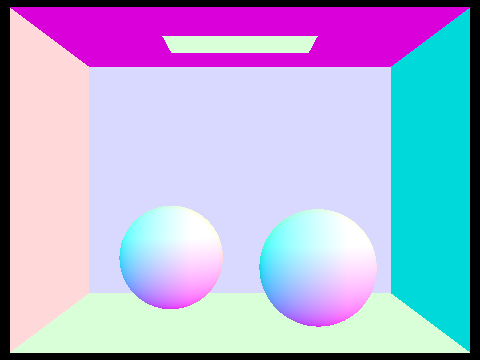
sky/CBspheres_lambertian.dae |

sky/CBgems.dae |
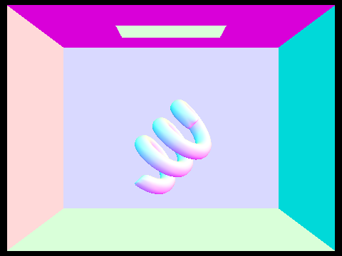
sky/CBcoil.dae |
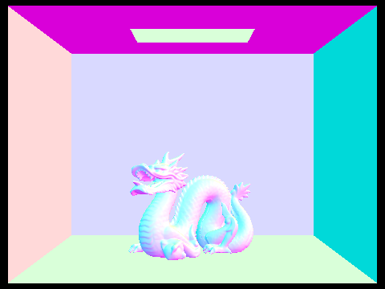
sky/CBdragon.dae |
Part 2: Bounding Volume Hierarchy
-
The splitting algorithm starts by iterating through the three base axes.
For each of the axis it finds the position of the median bounding box centroid of the primitives. Then it finds the surface area of each child volume and sums them.
The axis split that yields the best surface area is kept.
Using the median element is nice because it maintains a balanced tree. It, however, cannot account for some situations that could greatly reduce the surface area. (Like if the geometry is in two tightly packed differently sized regions) -
Traversal Optimization:
When traversing the acceleration structure, I tried to minimize unnecessary work. To do this, the algorithm always traverses the closer child node first. Then it does not traverse the other child node if the ray's hit point is closer than the external hit point of the child node. -
Performance difference:
-
meshedit/cow.daeat 1spp, res=380x560:
Render time: 3.0241s → 0.0173s (0.57%)
BVH generation time: 0.0060s
-
meshedit/maxplanck.daeat 1spp, res=380x560:
Render time: 25.3723s → 0.0231s (0.091%)
BVH generation time: 0.0760s
-
sky/CBlucy.daeat 1spp, res=380x560:
Render time: 84.5542s → 0.0157s (0.018%)
BVH generation time: 0.2362s
Going from least to most triangles, the performance improvement clearly increases. The cow took 0.57% of the original time while the angel took 0.018% of the time. This makes sense because the naive method increases linearly while the BVH traversal increases inverse exponentially. -
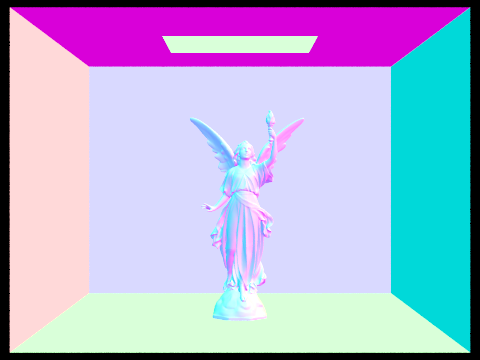
sky/CBlucy.dae (64 spp) |
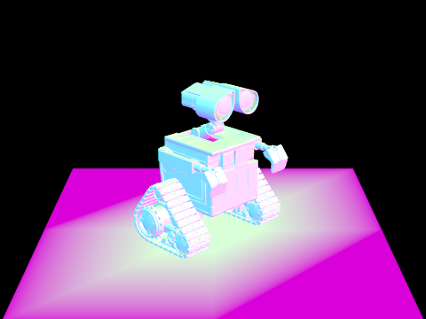
sky/wall-e.dae (64 spp) |
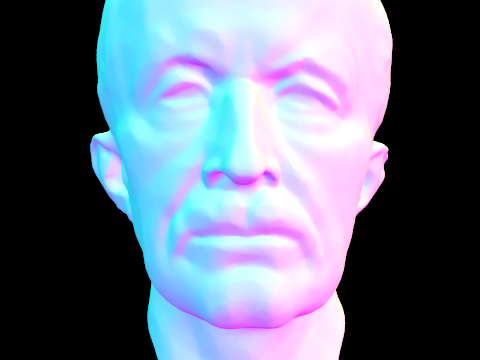
meshedit/maxplanck.dae (64 spp) |
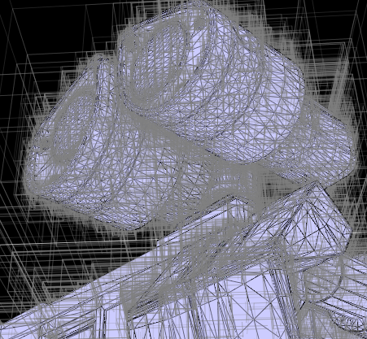
sky/wall-e.dae |
Part 3: Direct Illumination
-
Both of the direct lighting functions start by getting relevant information about the intersection. (hit point, incoming direction, space conversion matrices).
Then they accumulate samples.-
The uniform sampler samples by the number of lights times the number of samples per light.
For each, it gets a random direction from the surface. It converts it to world space and emits a ray in that direction.
If the ray hits something, it adds the BSDF times the emission of the object it hit and accumulates the result.
Then it divides the final accumulation by the number of samples and appropriate constant(s) (pdf=\(\frac{1}{2}\)). -
The importance sampler iterates through the lights. Point lights only get sampled once, while area lights get sampled according to the command line argument.
Then it accumulates (for each sample that hit) the BSDF times the radiance over the pdf.
The accumulation for each light is divided by the number of samples spent on that light, then added to a larger accumulator.
Then the final accumulation of all lights is divided by appropriate constant(s) (\(\pi\)).
-
The uniform sampler samples by the number of lights times the number of samples per light.
-
Optimization:
To save some (very small) amount of work, I delayed dividing by the probability density function until the end (when it was constant).
I'm not sure if the compiler would have optimized this on its own because it has slightly different behavior (due to finite precision). -
The importance sampling improves results greatly. The uniformly sampled images are extremely noisy everywhere while the importance sampled images are primarily just noisy in partially shadowed areas.
This follows intuitive expectation because the chance that a uniform sample hits a light is low, but when it does hit, the effect is high. - It appears that the effect of more samples (when importance sampling) diminishes. The difference between 1 sample and 4 samples appears larger than the difference between 16 samples and 64 samples. This (most likely) means that it is converging because as it converges, the effect of refinement becomes less and less.
Comparison of uniform hemisphere sampling (left) and importance sampling (right) at 32 light samples:
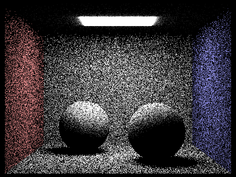
sky/CBspheres_lambertian.daeuniform |
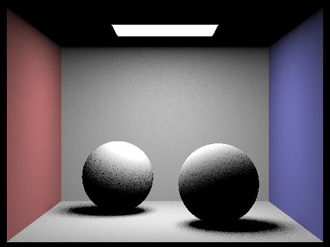
sky/CBspheres_lambertian.daeimportance |
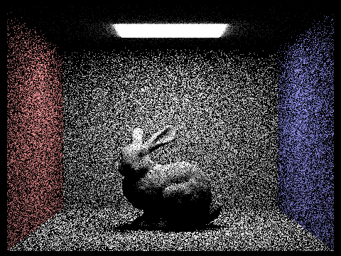
sky/CBbunny.daeuniform |
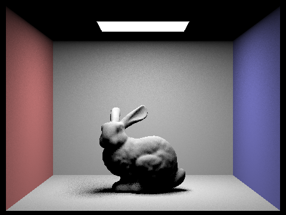
sky/CBbunny.daeimportance |
Importance sampling at different light sample rates:
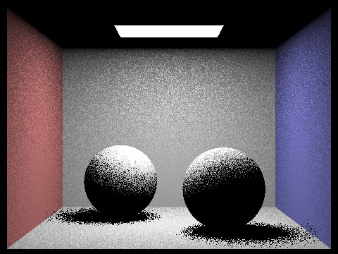
sky/CBspheres_lambertian.daeimportance 1 light sample |
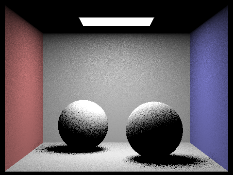
sky/CBspheres_lambertian.daeimportance 4 light samples |
sky/CBspheres_lambertian.daeimportance 16 light samples |
sky/CBspheres_lambertian.daeimportance 64 light samples |
Part 4: Global Illumination
-
My implementation of the lighting function was a little different than the recursive description given in class. I unrolled the recursion and accumulated values.
\(R_n\) being the one bounce radiance: \[L_1 = R_1 + \frac{f_1}{p_1}L_2, L_n = R_n + \frac{f_n}{p_n}L_{n+1}\] \[L_1 = R_1 + \frac{f_1}{p_1}\left( R_2 + \frac{f_2}{p_2}\left( R_3 + \frac{f_3}{p_3}\left( R_4 + \frac{f_4}{p_4}\left( R_5 + \frac{f_5}{p_5}\left( \cdots \right) \right) \right) \right) \right)\] Because the recursive algorithm always terminates in a finite amount of time (\(\exists N, L_N:=0\)): \[L_1 = R_1 + \sum_{n=1}^{N}{ R_{i+1} \prod_{i=1}^{n-1} { \frac{f_i}{p_i} } }\] So now this can be written in a for loop that accumulates \(f\) and \(p\). Because \(f\) is a vector and \(p\) is a scalar, it made sense to have two different variables for accumulating them.
The final for loop does the following:
- Check for intersection, if miss, break.
- Add zero bounce radiance if this is the first ray.
- Calculate space conversion matrices.
- Add the product of the one bounce radiance and the accumulated values to the total light value.
- Create the next ray based on a new BSDF sample.
- Accumulate \(f\) and \(p\) (
pdf) from the new BSDF sample.
This method was chosen to reduce stack allocations and memory usage. The memory usage is constant with path depth. This optimization is likely necessary when implementing this on graphics hardware.
Global illumination for a few scenes:
sky/CBspheres_lambertian.dae |
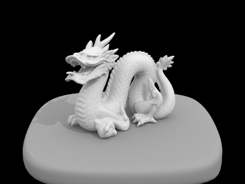
sky/dragon.dae |
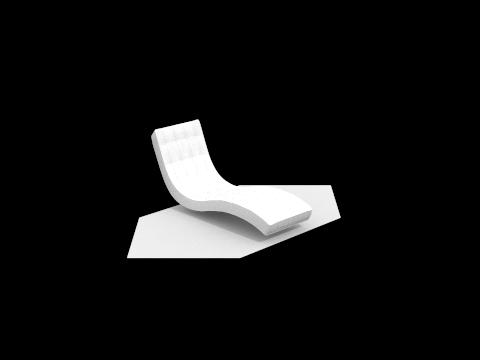
sky/bench.dae |
In the following scene, the lighting is able to reach most of the model, so the effect of indirect illumination is fairly subtle. Looking at the indirect illumination only, the model appears to be lit from below. This makes sense because the light is going from above, reflecting off the upwards facing surfaces and hitting the downwards facing surfaces.
Comparison of only direct and only indirect illumination for sky/wall-e.dae:
|
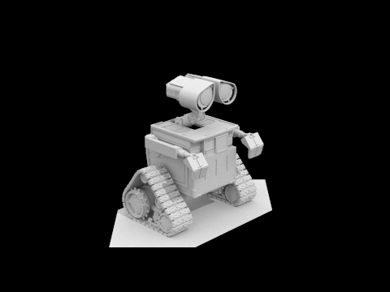
|
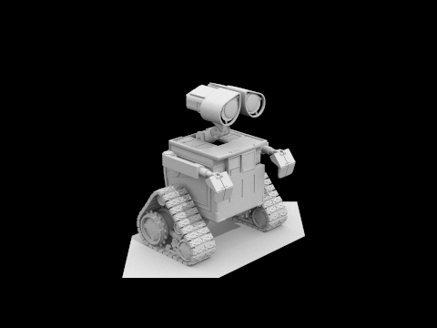
|
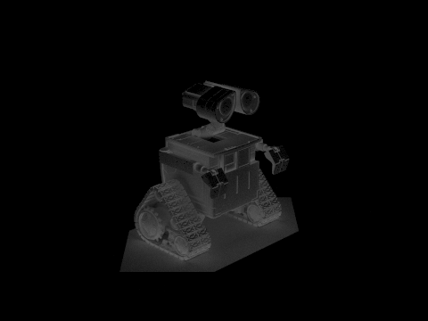
|
For the following image comparison:
The second and third bounces appear to get almost of the indirect lighting in this scene. The second bounce seems to capture all of the light reflected directly off of the floor. This is a fairly large effect because the light is facing the floor (so a lot of energy is going there). The second bounce also shows how the colors of the walls appear on the floor and ceiling. The third bounce appears to be adding some of the same effects but attenuated. Both are also adding light in areas that have a large open/visible surface area which ends up creating the effect of ambient occlusion. Rasterization rendering would usually create the ambient and ambient occlusion lighting in a very limited and approximate way. It would not create the color bleeding at all.
Global illumination breakdown for sky/CBbunny.dae:
|
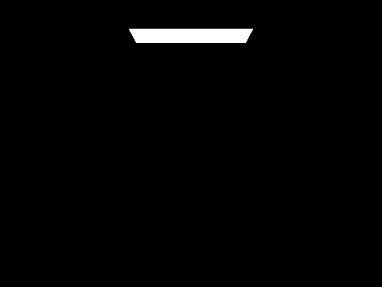
|
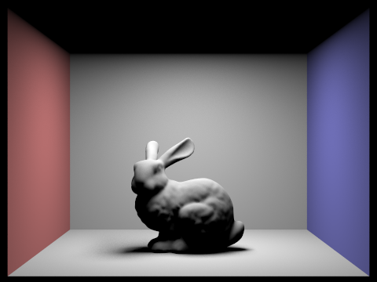
|
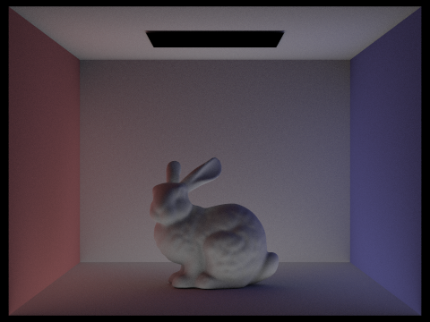
|
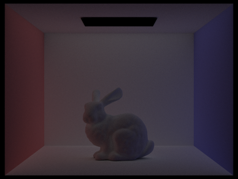
|
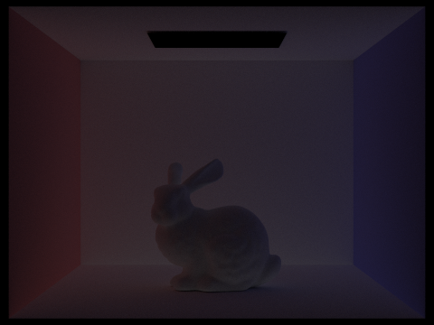
|
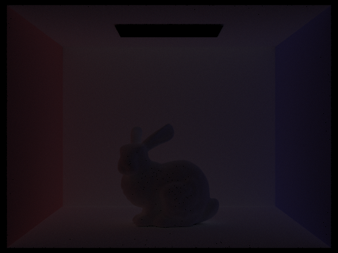
|
|
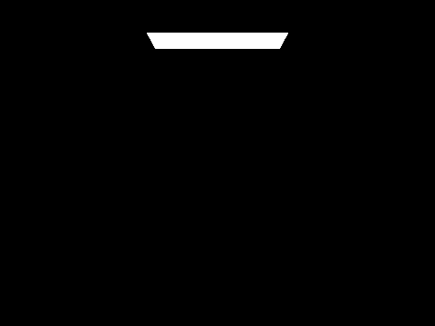
|
|
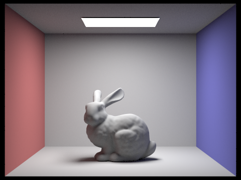
|
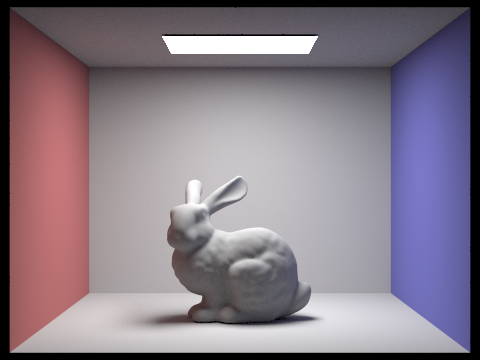
|
|
|
Comparison of different maximum ray depths for sky/CBbunny.dae (Russian Roulette factor 0.3):
|
|
|
|
|
|
|
|
Comparison of different sample per pixel rates for sky/CBspheres_lambertian.dae (at 4 light samples):
|
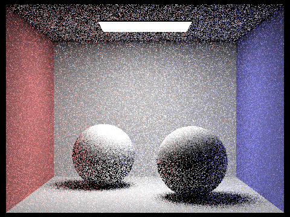
|
|
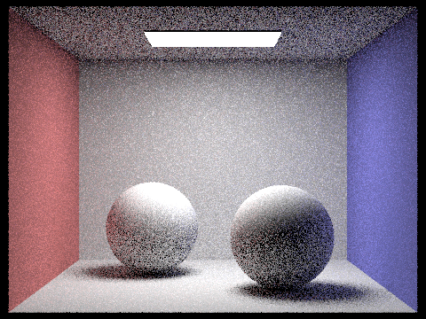
|
|
|
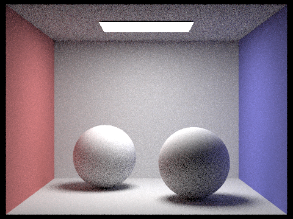
|
|
|
|
Part 5: Adaptive Sampling
-
To implement the adaptive sampling, I just modified the existing loop to check a condition every
samplesPerBatchiterations.
Every iteration also sums the illumination and square of the illumination.
Then everysamplesPerBatchsamples, it calculates \(I\) and \(\mu\) to determine if the pixel has converged. If the pixel converged, it breaks out of the loop.
The only issue was that in some lighting conditions, some samples would converge too early. This primarily only happened to indirect lighting. To fix this, I only start checking the convergence of samples after4*samplesPerBatchsamples. This way there is a greatly reduced chance of a pixel only sampling too many zeros and returning early.
Adaptive sampling:
sky/CBspheres_lambertian.dae |
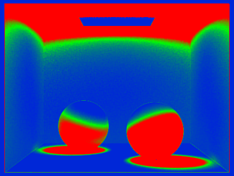
sky/CBspheres_lambertian.dae |
sky/wall-e.dae |
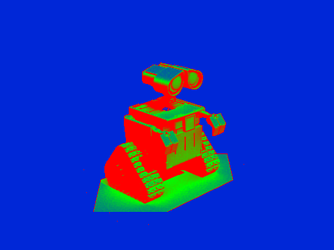
sky/wall-e.dae |
(Optional) Part 6: Extra Credit Opportunities
GPU Compute
Restructuring:
In order to implement this, I started by restructuring some code to allow for selecting the GPU or CPU to do rendering with a command line argument.I made a new class,
GPUPathTracer, which renders the entire image using the GPU.I made another new class,
GPU_BVHAccel, which is a version of the BVH that it optimized for sending to and using on the GPU.Because (at least the last I heard) OpenGL does not support multithreading, I completely disable any thread spawning when GPU compute is selected.
Ray Generation:
To compute rays from the camera, I opted to use a matrix. This was because the entire view transformation could be done with two mutliplications using this matrix. (and 6 divisions, 3 subtractions, and a vector normalization to get the final ray).The goal is for ray perspective generation and the camera transformation to be done simultaneously.
The final matrix looked like this (should look similar to the inverse of the standard perspective matrix): \[ M=\begin{bmatrix} \frac{2}{\text{width}}\cdot\tan\left(\frac{f_h}{2}\right) && 0 && 0 && -\tan\left(\frac{f_h}{2}\right)\\ 0 && \frac{2}{\text{height}}\cdot\tan\left(\frac{f_v}{2}\right) && 0 && -\tan\left(\frac{f_v}{2}\right)\\ 0 && 0 && 0 && -1\\ 0 && 0 && -\frac{\text{far}-\text{near}}{\text{far}\cdot\text{near}} && \frac{\text{far}}{\text{far}\cdot\text{near}} \end{bmatrix} \] Taking the vectors, \[ \alpha=\begin{bmatrix} x\\y\\0\\1 \end{bmatrix} , \beta=\begin{bmatrix} x\\y\\1\\1 \end{bmatrix} \] and computing, \[ a=\frac{(M\alpha)_{xyz}}{(M\alpha)_w}, b=\frac{(M\beta)_{xyz}}{(M\beta)_w} \] yields the ray origin and direction, \[ r_o = a\\ r_d = \text{normalize}(b-a) \] What this is doing is finding coordinates on the near and far planes. The origin is set to the coordinate on the near plane, and the direction is the difference between the point on the near and far planes.
Consequently, the ray starts at the near plane rather than the pinhole camera's origin. This means that the ray's minimum \(t\) should be set to zero for the camera ray.
The benifit is that this matrix can be combined with the camera view matrix, and the latter computation can be done afterwards. (leaving just one 4x4 matrix being sent to the GPU program)
This also handles the pixel location directly (rather than having to scale to \([0,1]\)coordinates first).
Testing:
Testing the ray origin:
|
|
|
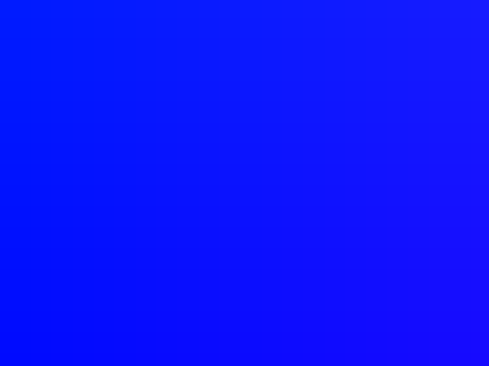
|
Testing the ray direction:
|
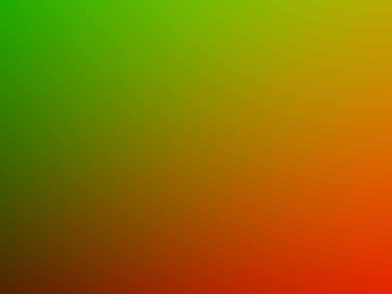
|
Triangle Intersection:
I used an OpenGL storage buffer to send the data for each triangle.I translated the earlier implementation of the Möller Trumbore algorithm in GLSL.
A compute shader does the actual computation using a for loop to go through each triangle.
Testing the ray generation and triangle intersection:
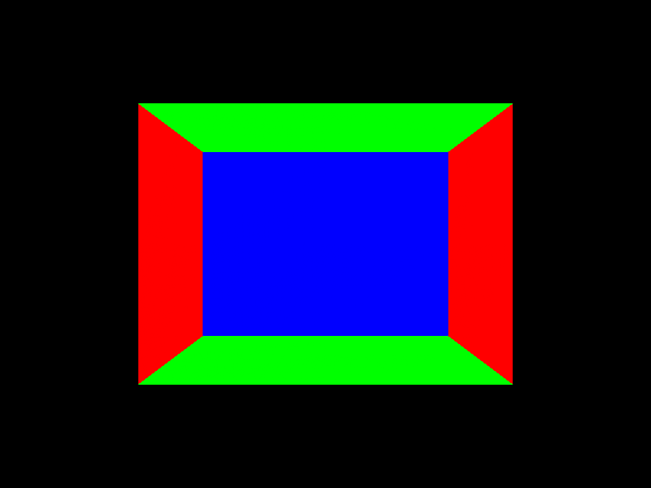
sky/CBempty.dae with raw absolute value normal shading. |
sky/CBbunny.dae with raw absolute value normal shading. |
Also, these results show that the ray generation from the previous part is working. The position of the faces do not change at all when rendering.
Testing the near clipping plane with the ray generation:
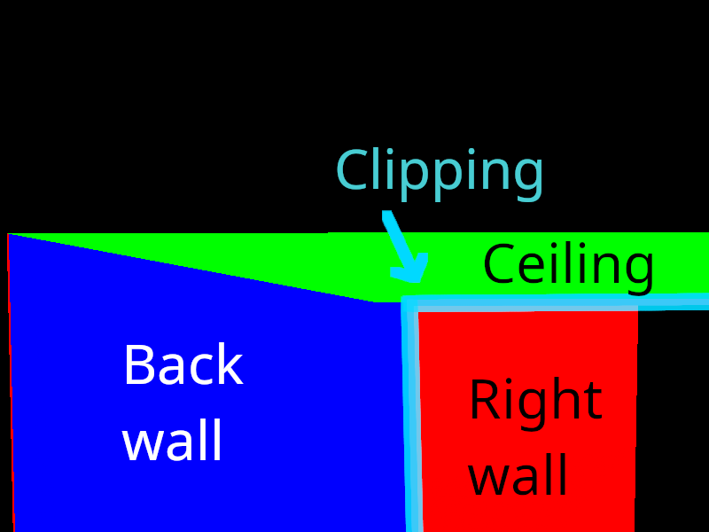
sky/CBempty.dae very close to camera |
Acceleration Structure Construction, Storage, and Traversal:
The structure of the BVH I implemented in GPU memory is the following:There is an array of triangle objects which each store 3 points and 3 normals (materials will be added to this later).
Then there is an array of nodes which store a bounding box some additional information.
Each node has four integers, two of which store the start and end indices (to be used like iterators) into the triangle array. If it is not a leaf node, they are both zero.
The other two are used for traversal (described later). I made it such that the root node is the first node in the array for simplicity.
To check if any of this is working, I limited the triangles that would be checked. They appeared to be split rectangularly as I expected.
Verifying the BVH construction of the triangle array:
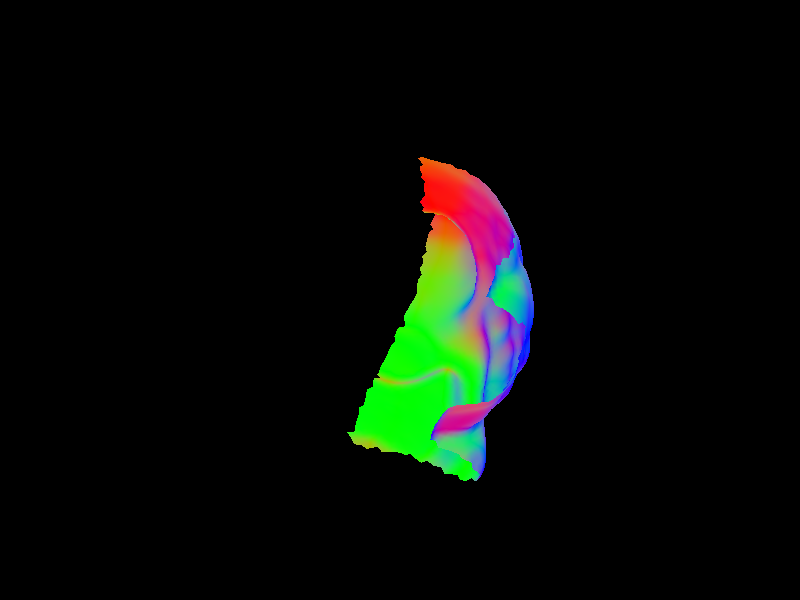
sky/CBbunny.dae |
Recursion in GLSL is not possible, so tree traversal is made more difficult. At first I thought I would store the children and parent for each node. This might allow the shader to walk through the tree in a simple loop.
Since I haven't implemented this, I'm not sure this is possible without some sort of tree depth-sized extra memory per thread.
Instead, I came across a solution online that makes the shader very simple. For each node, you store the next node on hit and the next node on miss. (Idea from Stack Overflow)
The node storage isn't any larger because child and parent pointers no longer have to be stored.
Traversal:
|
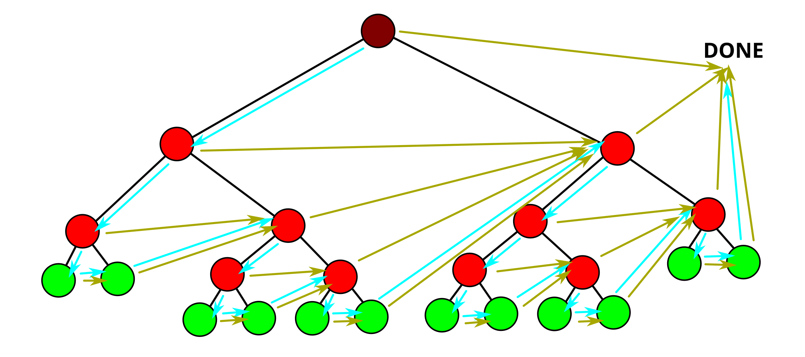
|
Result:
sky/CBbunny.dae |
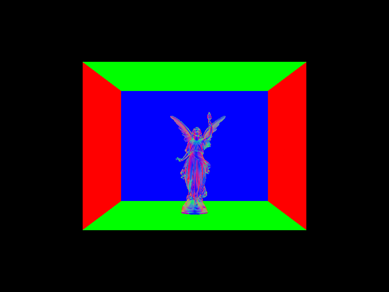
sky/CBlucy.dae |
For the following: [__, __] CPU timing means [time for single thread, time for 20 threads (10 cores)].
sky/CBlucy.dae went from [0.1177, 0.0215] seconds (CPU) to 0.0126 seconds (GPU).sky/CBbunny.dae went from [0.0983, 0.0209] seconds (CPU) to 0.0154 seconds (GPU).This is not what I was hoping, but I have not done any work load optimization for the compute shader dispatch.
The GPU times also include shader compilation, resource construction, and upload time, though these are probably minimal.
Sampling:
Pretty much the entire random number generation is based onHybridTaus from GPU Gems 3 Chapter 37.It took some fiddling with the four integers used to seed the generator, but the final result looks random enough if a few time steps are used to initialize it.
Testing noise:
|
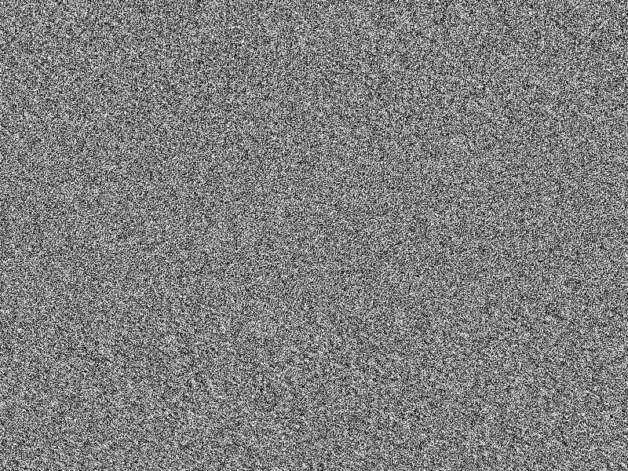
|
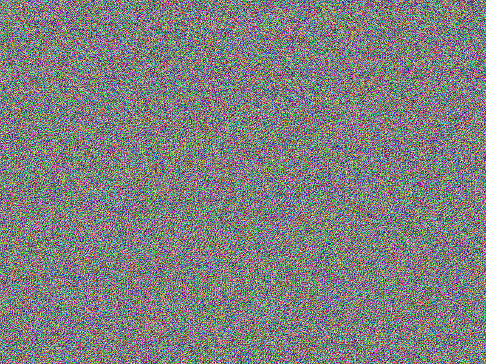
|
Sampling pixels randomly for anti-aliasing:
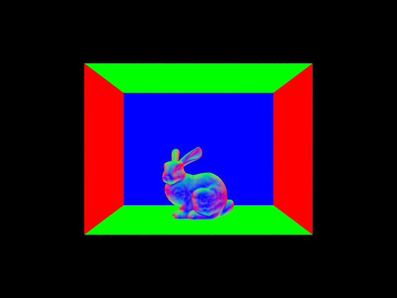
sky/CBbunny.dae at 64spp |
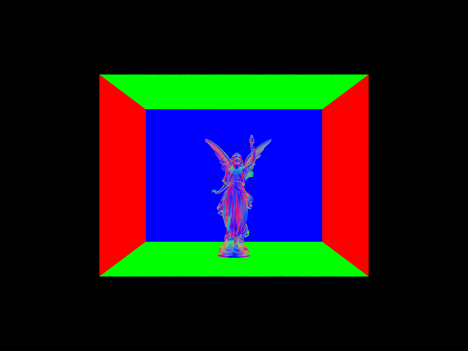
sky/CBlucy.dae at 64spp |
And after a bit of code translation from other parts of the project, and copying the code for color conversion (taken from
HDRImageBuffer):
Importance sampled area light:
sky/CBbunny.dae |
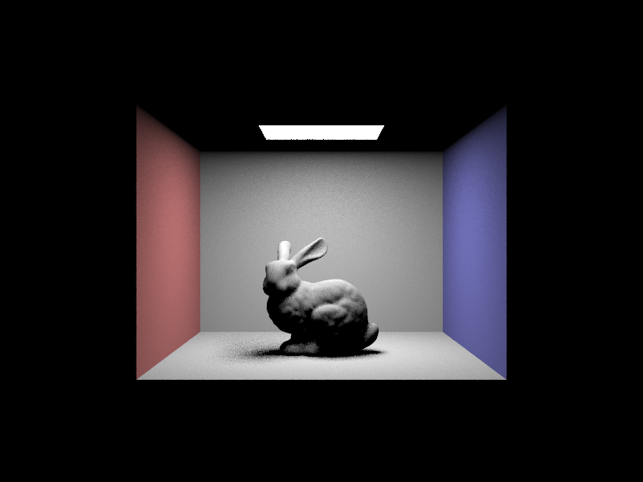
sky/CBbunny.dae |
Global Illumination (final result):
After moving the rest of the code over, here is a side by side comparisons of a globally illuminated render:
sky/CBbunny.dae(single thread: 73.6548s, 20 thread: 14.5832s) |
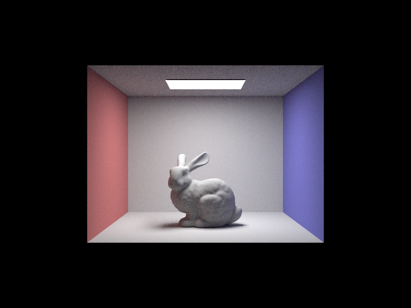
sky/CBbunny.dae(3.4601s) |
It would appear that doing the global illumination has improved the GPU's relative performance for this specific scene.
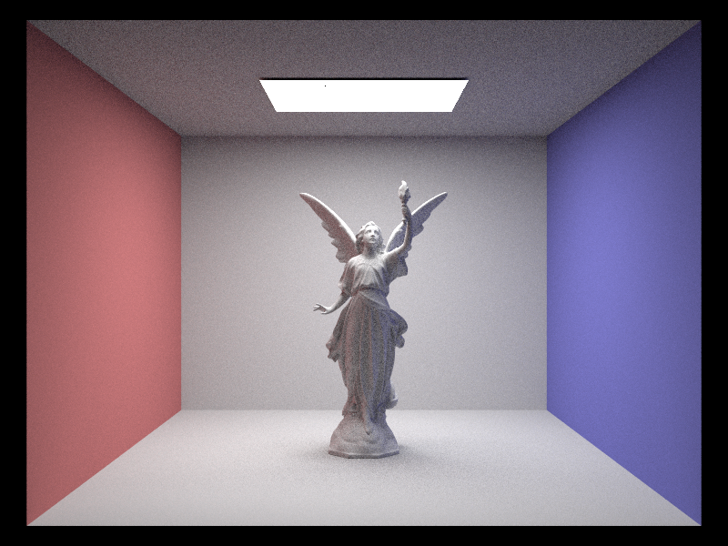
sky/CBlucy.dae (8.2428s) |
Conclusion:
The GPU clearly makes path tracing faster for these scenes, but not as much as I expected. Especially because (for my implementation) the GPU is only working with single precision floating point numbers while the CPU is working with doubles.I think more time (that I do not have at the moment) needs to be put into analyzing the GPU performance. I did not focus on work dispatch at all, so that would be a good place to start. Currently, it dispatches one compute thread per pixel that runs everything.